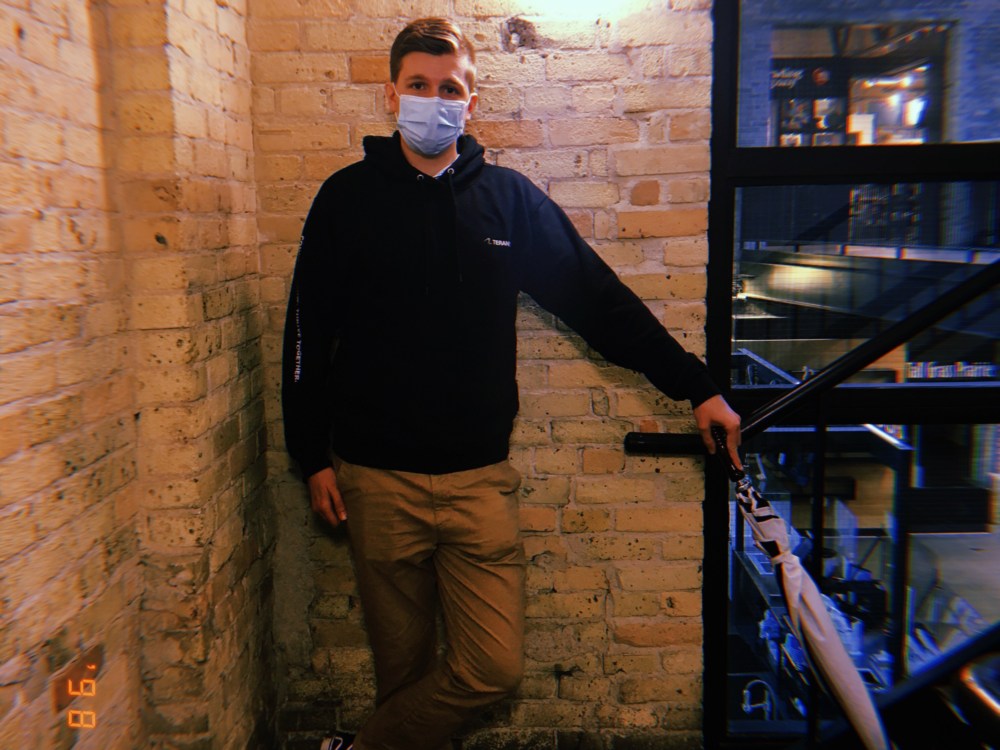

Richard Connor
Davidson

Who am I?
Hello my name is Richard Connor Davidson and I am in my fourth year of studies at the University of Alberta. I was born in 1998 and am currently 23 years old, living in Edmonton AB. I am originally from Winnipeg MB and I moved to Edmonton when I was 18 to attend the University of Alberta and study computing science. I love computers, both for play and for work and I am studying computing science.
My primary areas of interest are artificial intelligence, machine learning, cybersecurity and web based application development. Ideally I would like to work for an institution that is focused on incorporating new technologies and practices and one which shares my views.
In terms of my personal interests, I love going on bike rides, either alone or with friends. As well as going on daily strolls, especially with my father when I am in the same city as him. I also am a huge fan of dodgeball and basketball. Other than that, I also love spending time with friends and family and playing video games.
In particular I am obsessed with the video game League of Legends. I've made many of the friends I hold closest to me in this game and I don't think I can count all the hours I have put into this game. Needless to say I am always down to talk about League of Legends. In case you were wondering the max rank I made it to was Platinum 3 all the way back in season 5.
My Professional Experience
National Microbiology Labratory
September-December 2019
Government of Canada
Agriculture and Agri-Food Canada
January-April 2021
Government of Canada
Manitoba Hydro
May-August 2021
Manitoba Hydro
Worked on a bioinformatic pipeline for the detection of antimicrobial resistance
Incorporated various bioinformatic pipelines in the Galaxy Project
Created a Python script used to describe the correct system resources to allocate for future runs of bioinformatic analyses
Database modelling using the Entity-relationship model
Creation of a Sharepoint site and aggregation of all preexisting data from numerous sources to our centralized site
Creation of Sharepoint workflows using Sharepoint Designer
Dynamic report generation via PowerBi
Creation of PowerShell scripts which performed many daily tasks that once had to be done by hand such as updating various SharePoint databases, sending emails and moving data from one database to another.
Updated numerous internal web services.
Dynamic report generation using PowerBi.
Setting up Microsoft Azure repositories and pipelines to store and deploy preexisting web services.
What do I bring?
Experience writing in HTML and CSS, Javascript, Python, C, C++, C#, Java, SQL and Mips
Experience working in PowerBi, Sharepoint, Github, Excel, Word, Powerpoint and Powershell
12 months (collectively) of work experience at three different locations
I am a hard worker with a can do attitude who never takes shortcuts
I also have great interpersonal skills and am generally a pretty nice and genuine guy